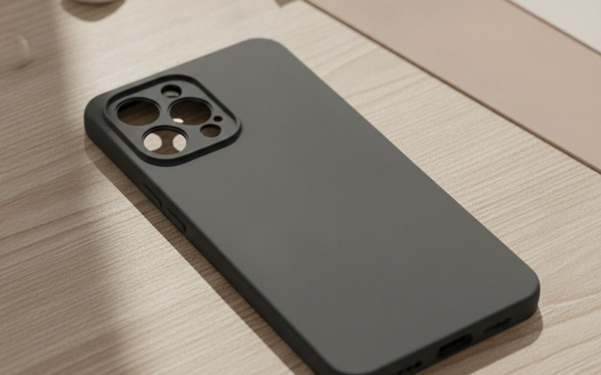
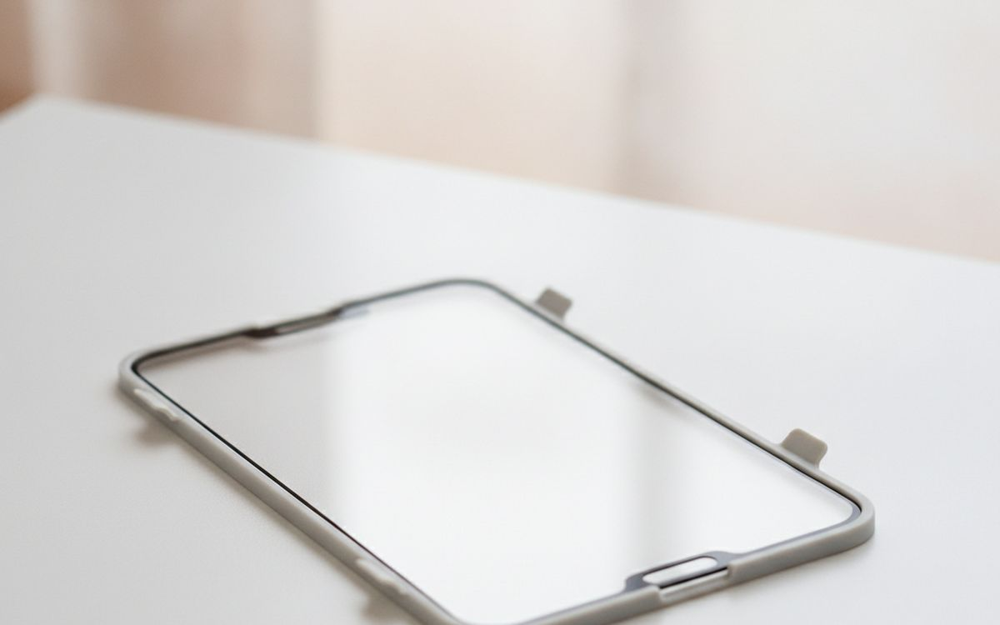
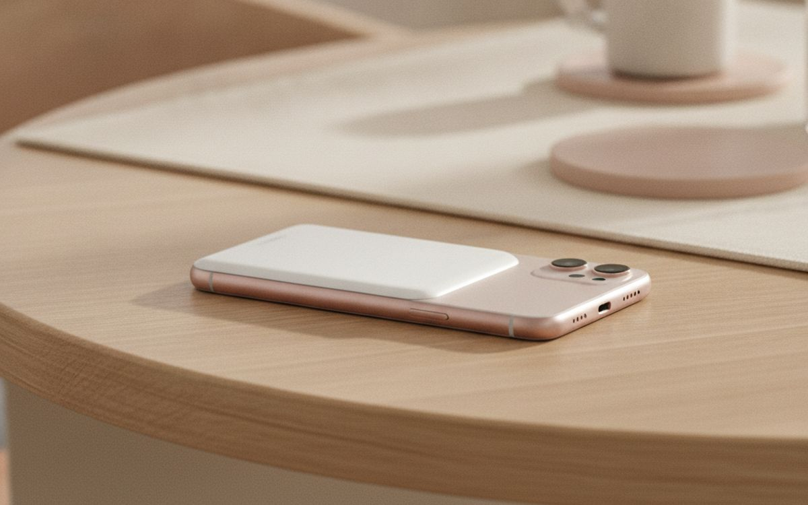
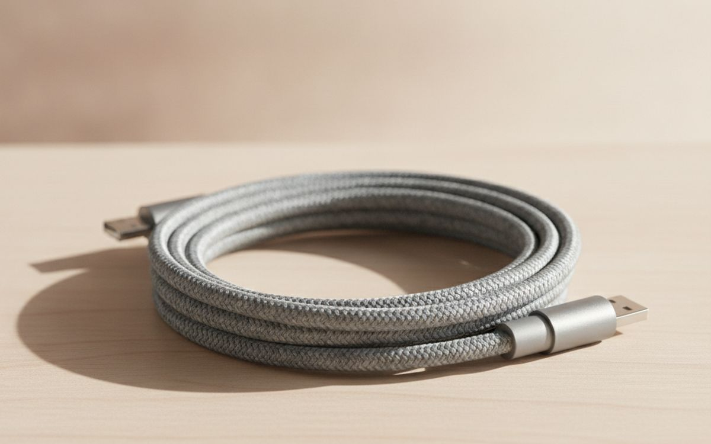
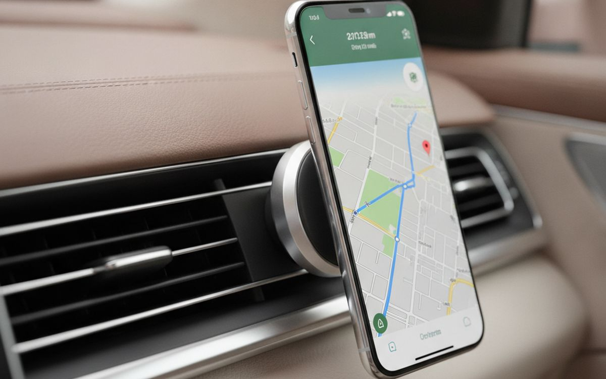
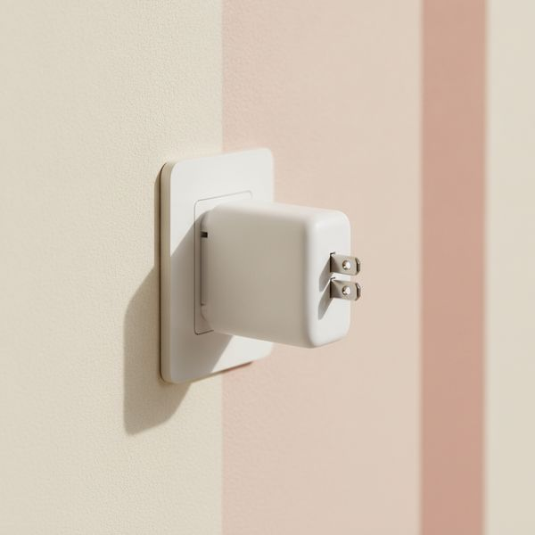
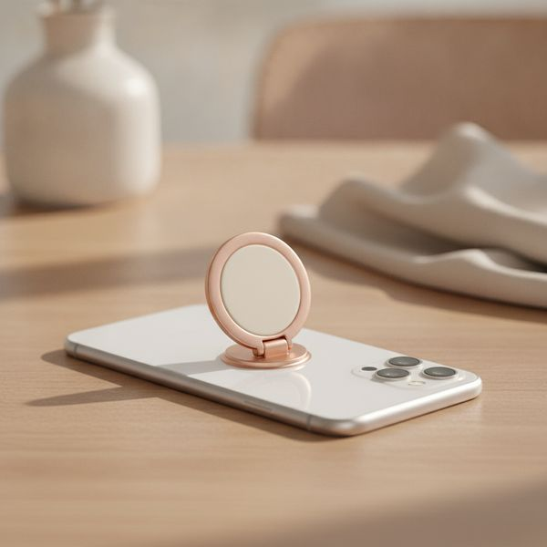
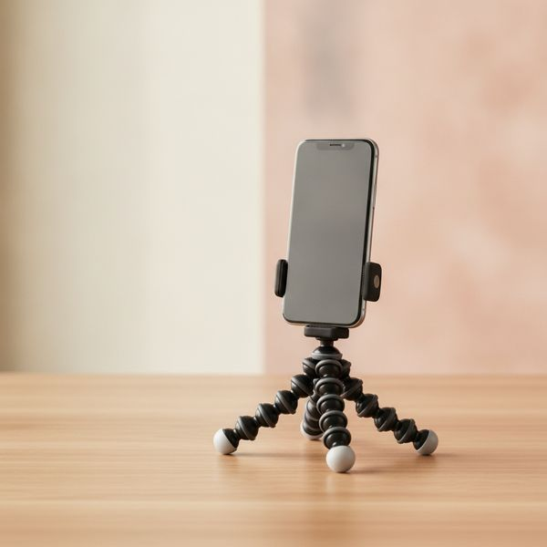
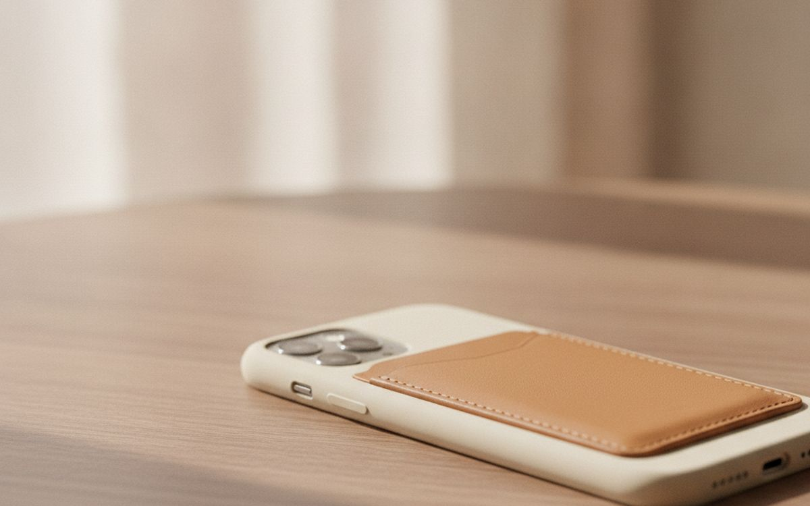
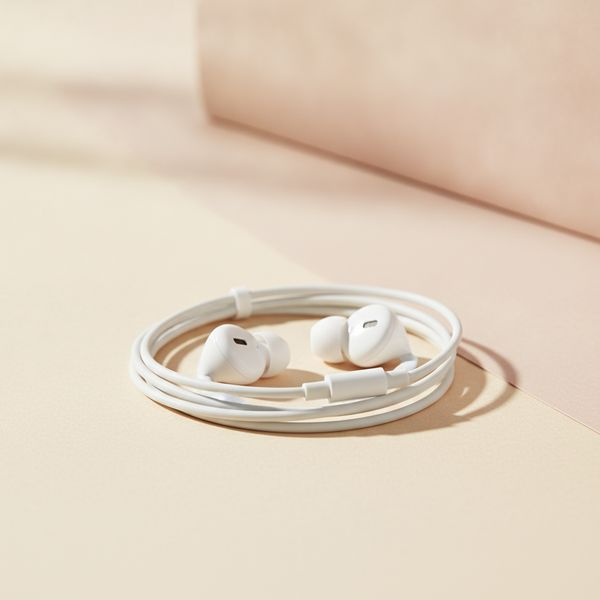

Diez accesorios que aguantan el uso diario, y los más populares que no volveríamos a comprar.
Los accesorios para el móvil son una categoría de compra por impulso. Son lo bastante baratos como para no pensárselo dos veces, y por eso casi todo el mundo tiene un cajón lleno de ellos y solo usa tres.
Los tres que sobreviven son casi siempre los mismos: algo que evita que el móvil se rompa, algo que lo mantiene cargado y algo que lo sujeta. Todo lo que viene a continuación se juzga en función de si, pasado un año, sigue mereciendo un hueco en el bolsillo o en el bolso.
Los precios son aproximados en el momento de redactar este artículo. Esta categoría está inundada de productos casi idénticos con nombres diferentes, así que describimos en qué fijarse en lugar de insistir en una marca concreta.
Aviso. Los enlaces de esta página son de afiliados. Si compras a través de uno podemos ganar una comisión sin coste adicional para ti. No influye en qué entra en esta lista ni en su orden.
Cómo lo elegimos
Priorizamos los productos que evitan una avería cara, eliminan una molestia cotidiana o duran más de un móvil. Nos basamos en pruebas publicadas, normas de certificación e informes de propietarios a largo plazo, y no hemos usado personalmente todos los productos de esta lista. Cuando un accesorio popular de verdad no merece la pena, lo decimos en lugar de omitirlo sin más.
De un vistazo
Los precios son aproximados en el momento de escribir y cambian a menudo.
Las recomendaciones

1
La que te ahorra dineroUna funda con bordes elevados y protección en las esquinas
$20–60
Los móviles casi siempre se rompen de dos maneras: por un impacto en una esquina que se transmite por el marco hasta la pantalla, o al caer boca abajo sobre algo de gravilla. Una funda solo ayuda si protege de ambas cosas, lo que significa un refuerzo real en las esquinas y un borde que sobresalga por encima de la pantalla y del cristal de la cámara. Ese borde es la característica más importante y la primera que sacrifican las fundas finas. Busca una clasificación de resistencia a caídas declarada en lugar de una frase de marketing, y si tu móvil es compatible con accesorios magnéticos, compra una funda que también lo sea; de lo contrario, perderás esa función en el momento en que protejas el teléfono.
Por qué está aquí
- Evita las dos formas más comunes en que se rompen los móviles
- El borde elevado protege la pantalla y el cristal de la cámara
- Barata en comparación con lo que cuesta reparar una pantalla
Conviene saber
- Las fundas finas prescinden del borde, que es lo más importante
- Añade un bulto considerable en el bolsillo

2
Compra dos, necesitarás dosProtector de pantalla de cristal templado (pack de dos)
$10–25
Un protector de pantalla es un consumible que cuesta una décima parte de lo que cuesta reparar la pantalla. Vale la pena pagar el pequeño extra por uno de cristal en lugar de uno de plástico, porque resiste la arena y las llaves, que son las que de verdad causan los arañazos. La característica en la que hay que insistir es que incluya un marco de alineación en la caja: la mala colocación, y no la calidad, es la razón por la que la mayoría de los protectores acaban con burbujas de polvo y esquinas levantadas. Compra un pack de dos, porque tu primer intento puede salir mal y porque un protector agrietado ya ha cumplido su función y hay que cambiarlo. Limpia la pantalla, vuelve a limpiarla y luego usa las pegatinas para quitar el polvo.
Por qué está aquí
- Cuesta una décima parte de lo que cuesta reparar la pantalla
- El cristal resiste las causas reales de los arañazos
- Los marcos de alineación lo hacen infalible
Conviene saber
- Los baratos interfieren con los lectores de huellas en pantalla
- La colocación es muy difícil sin un marco

3
La carga más cómodaUna batería externa inalámbrica y magnética
$40–80
La razón por la que estas se usan y las de cable no, es que se acoplan con un solo gesto y te permiten seguir usando el móvil mientras se carga, sin que cuelgue ningún cable por debajo. Esa comodidad es todo el argumento, y es bueno. Pero hay que tener claro el inconveniente: la carga inalámbrica es bastante menos eficiente que un cable, por lo que una batería magnética de 5,000mAh rinde notablemente menos que una de cable de 5,000mAh, y se calienta. Para pasar el día fuera es ideal. Para un vuelo largo, llévate el cable.
Por qué está aquí
- Se acopla con un solo gesto, sin cables colgando
- Puedes usar el móvil con normalidad mientras se carga
- Lo bastante fina como para llevarla puesta en el bolsillo
Conviene saber
- La transferencia inalámbrica desperdicia parte de la capacidad
- Se calienta cuando está en uso

4
Donde lo barato sale caroUn cable USB-C trenzado de 2 m
$12–25
Los cables fallan en el protector de tensión, donde el cable se une al conector, y por eso el que viene en la caja es el primero en deshilacharse. Una cubierta trenzada con un buen collarín moldeado sobrevive años al mismo trato. La longitud importa más de lo que la gente admite: dos metros marcan la diferencia entre poder usar el móvil en la cama o en el sofá, y no poder. Si cargas un portátil con el mismo cable, comprueba los vatios indicados, y si quieres transferir datos rápido, comprueba también la velocidad, ya que muchos cables transportan 100W de potencia pero solo datos a velocidad USB 2.0.
Por qué está aquí
- La cubierta trenzada aguanta años de dobleces
- 2 m llegan desde un enchufe mal ubicado
- Un seguro barato contra un cable inservible
Conviene saber
- Un vataje alto no implica datos rápidos
- El trenzado añade rigidez con el frío

5
Seguridad, no comodidadUn soporte magnético para el coche
$20–45
Este artículo está en la lista por seguridad, no por ser un gadget. Un móvil en un soporte a la altura de los ojos significa echar un vistazo en lugar de bajar la mirada al regazo, y en muchos sitios manipular el móvil mientras se conduce es una infracción. Los soportes magnéticos ganan a los de pinza porque se acoplan con una sola mano, sin ajustar brazos. Los soportes de rejilla de ventilación son los más fáciles de colocar y pueden bloquear el flujo de aire o ceder en aletas blandas; los de ventosa para el parabrisas son más estables, pero consulta la normativa local, ya que obstruir el parabrisas está regulado en algunos países.
Por qué está aquí
- Mantiene la vista cerca de la carretera
- Acoplamiento con una sola mano
- Barato para lo que evita
Conviene saber
- Los soportes de rejilla ceden y bloquean el aire
- La colocación en el parabrisas está regulada en algunos países

6
El que sustituye al de la cajaUn cargador de pared GaN de 30W o más
$20–40
La mayoría de los móviles ya no vienen con cargador, y los reemplazos más baratos de cualquier tienda online son lo peor en lo que se puede ahorrar, porque están conectados a la red eléctrica de tu pared. Un cargador de nitruro de galio (GaN) de 30W de una marca conocida es pequeño, no se calienta y carga un móvil moderno a toda velocidad. Los modelos de dos puertos permiten que un solo enchufe sirva para el móvil y los auriculares. Busca un sello de certificación de seguridad reconocido en el cuerpo del cargador: su ausencia en un producto sin marca es una razón real para no comprarlo, no una formalidad.
Por qué está aquí
- Carga a toda velocidad en un cuerpo diminuto
- No se calienta, las clavijas plegables son ideales para viajar
- Dos puertos cubren el móvil y los auriculares
Conviene saber
- No es el producto para comprar sin marca
- Un vataje muy alto se desperdicia solo con un móvil

7
Barato, y evita caídasUn agarre o soporte de anillo para el móvil
$10–25
Los móviles han crecido más allá del tamaño que una mano puede sostener cómodamente, y la mayoría de las caídas ocurren al estirar el dedo con una sola mano hacia la esquina más lejana de la pantalla. Un agarre elimina por completo ese estiramiento y, además, sirve de soporte para ver algo. Elige uno magnético extraíble en lugar de uno adhesivo: las versiones adhesivas bloquean la carga inalámbrica, no se pueden quitar limpiamente y acaban despegándose. Los diseños plegables quedan más planos en el bolsillo. Es una cosa pequeña, y es uno de los pocos accesorios que reduce de forma medible la frecuencia con la que se te cae el móvil.
Por qué está aquí
- Elimina el estiramiento con una mano que causa las caídas
- Sirve también como soporte de visualización
- Las versiones magnéticas se quitan limpiamente
Conviene saber
- Los de tipo adhesivo bloquean la carga inalámbrica
- Añade un bulto en un bolsillo apretado

8
El mejor para las videollamadasUn trípode pequeño o un soporte de cuello de cisne
$15–40
Apoyar el móvil contra una taza es como la mayoría de la gente hace videollamadas, y eso explica muchísimos ángulos de cámara poco favorecedores. Un trípode pequeño pone el objetivo a la altura de los ojos y lo mantiene quieto, que es todo su trabajo. El tipo de patas flexibles es el formato más útil porque se enrolla en el respaldo de una silla, el borde de una estantería o el cuadro de una bicicleta con la misma facilidad con la que se apoya en una mesa. Comprueba que la pinza se abra lo suficiente para tu móvil con la funda puesta: un número sorprendente no lo hace, y esa es la especificación que la gente olvida.
Por qué está aquí
- Pone la cámara a la altura de los ojos
- Las patas flexibles se agarran a casi todo
- Se pliega lo suficiente como para caber en un bolso
Conviene saber
- Muchas pinzas no sirven para un móvil con funda
- Los baratos ceden con el peso de un móvil pesado

9
Útil, con una advertenciaUn tarjetero extraíble o una funda cartera
$15–45
Llevar dos tarjetas en la parte trasera del móvil realmente sustituye a la cartera en la mayoría de los trayectos cortos, y los soportes magnéticos extraíbles lo consiguen sin modificar permanentemente el teléfono. Dos advertencias prácticas. Las tarjetas de hotel y algunas tarjetas de banda magnética antiguas pueden desmagnetizarse por imanes potentes, así que mantenlas separadas. Y poner tu DNI y tu tarjeta bancaria en el objeto con más probabilidades de perderse o ser robado concentra el riesgo en un solo lugar: está bien para ir a las tiendas, pero no es tan buena idea para una noche de fiesta. Las tarjetas contactless, por lo general, no se ven afectadas.
Por qué está aquí
- Sustituye a la cartera en trayectos cortos
- Las versiones magnéticas se quitan cuando no se necesitan
- Fino, casi no añade volumen
Conviene saber
- Los imanes potentes pueden desmagnetizar tarjetas de banda y de hotel
- Concentra el riesgo de pérdida en un solo objeto

10
El repuesto que no está de modaAuriculares con cable y conector USB-C
$15–40
Tener un par de auriculares con cable baratos en el bolso soluciona los problemas que crean los inalámbricos: un estuche de carga sin batería antes de una llamada larga, un fallo de emparejamiento en una reunión o un sistema de entretenimiento a bordo que requiere una conexión física. Nunca necesitan cargarse, no tienen latencia y cuestan menos que reponer un solo auricular inalámbrico perdido. El micrófono de un par con cable decente también suele estar mejor situado para las llamadas que el de un portátil. No es emocionante, pero es algo que agradecerás el día que todo lo demás falle.
Por qué está aquí
- Nunca necesitan cargarse, latencia cero
- Lo bastante baratos como para tener un par de repuesto
- El micrófono está en mejor posición para llamadas que el de un portátil
Conviene saber
- Un cable que desenredar
- Ocupa el puerto de carga en la mayoría de los móviles
Preguntas frecuentes
¿Qué accesorio para el móvil no merece la pena comprar?
Los objetivos de cámara de pinza, los cargadores baratos sin marca y los agarres adhesivos tipo PopSocket que bloquean permanentemente la carga inalámbrica. Las cajas de desinfección UV también son en su mayoría innecesarias: jabón y un paño de microfibra hacen el mismo trabajo.
¿Afecta el protector de pantalla al lector de huellas?
Uno bueno, no. Un cristal barato o demasiado grueso puede interferir con los lectores integrados en la pantalla, así que comprueba que el producto indique explícitamente que es compatible con el sensor de tu móvil antes de comprarlo.
¿Es mala la carga inalámbrica para la batería?
El calor que genera es el factor relevante, y el calor es lo que envejece una batería. La carga inalámbrica ocasional no es un problema; cargar el móvil toda la noche sobre una base caliente en una habitación calurosa es el caso que conviene evitar.
¿Cuántos vatios necesito realmente para un cargador de móvil?
Unos 30W cubren la carga a máxima velocidad en casi todos los móviles actuales. Cifras más altas solo importan si el mismo cargador también tiene que alimentar un portátil o varios dispositivos a la vez.
← Todas las guías
Hemos solicitado unirnos al Programa de Afiliados de Amazon. Todavía no somos Afiliados de Amazon y hoy no ganamos nada con los enlaces a Amazon. Como afiliados de AliExpress, ganamos por las compras que cumplen los requisitos. Los precios y la disponibilidad son correctos en la fecha de publicación y pueden cambiar.